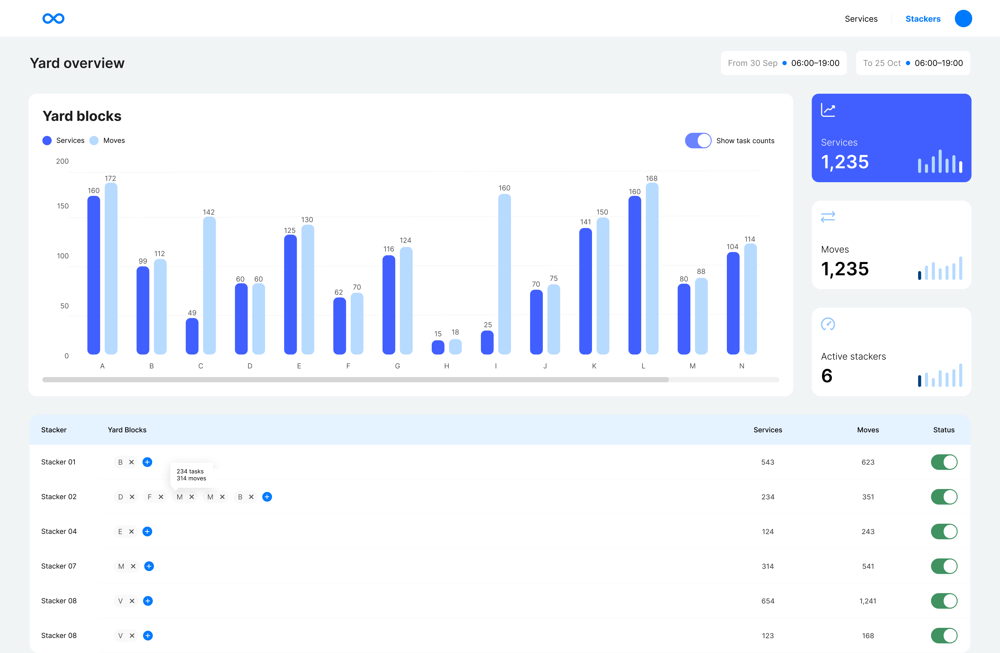
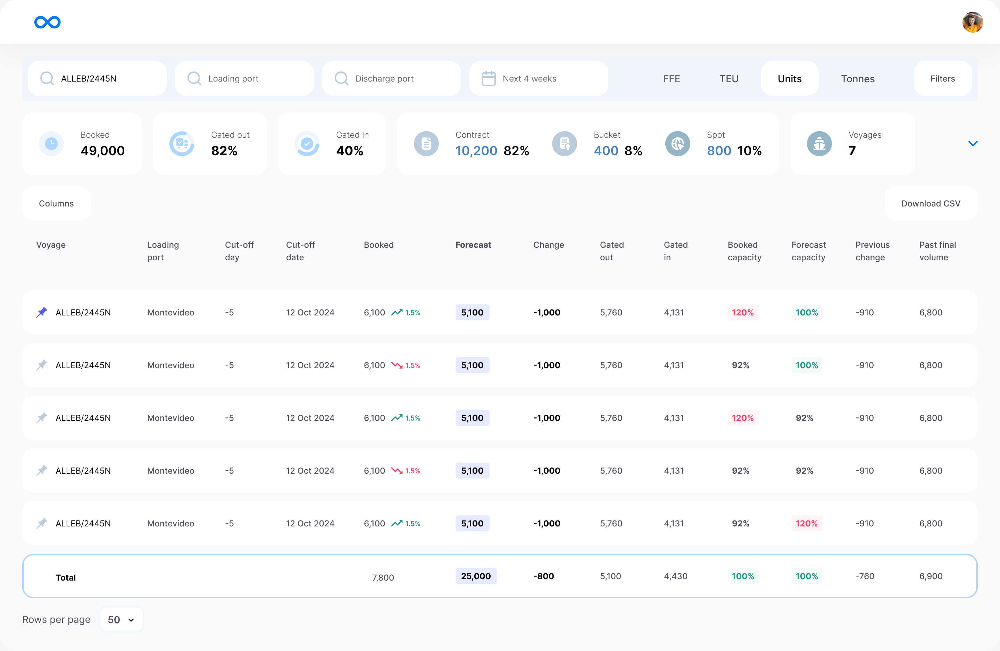
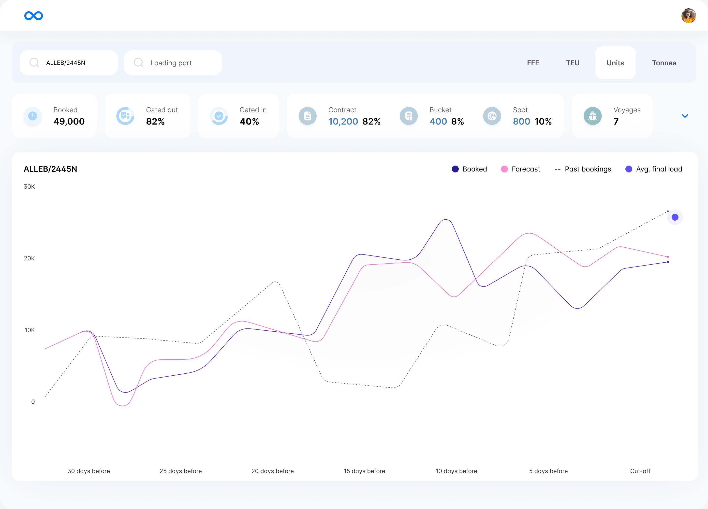
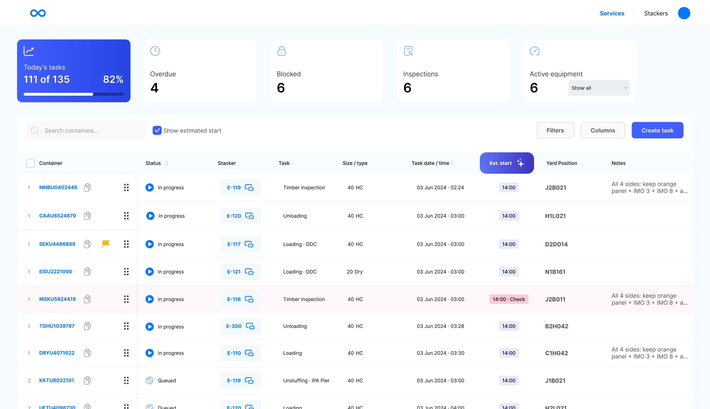

In spreadsheets
Arrival lists, schedules and separate versions of the plan.
A shared picture for the people moving global trade
Imagine solving a giant, time-critical puzzle.
You cannot see all the pieces.
And the people moving them are in another room, waiting for your instructions.
That is the coordination challenge inside a container terminal. I designed SmartYard to give planners and field teams a shared view of what was arriving, what needed to move, and what had to happen next.

The operation
A shipping container can travel from a factory by road or rail, pass through an export terminal, cross an ocean on a vessel, and enter another terminal before continuing inland. The same steel unit connects manufacturers, shipping lines, customs authorities, terminal teams and inland carriers across countries.
Inside the yard, containers are stacked in designated blocks and moved by heavy equipment. Their position has to account for vessel schedules, cargo cut-offs, customs release, inspections and collection appointments. Refrigerated cargo also needs powered storage. An inaccessible container can force extra lifts; a missed deadline can disrupt the next leg of its journey.
Factory or warehouse
Road / rail transport
Receive · inspect · stack
Prepare for vessel loading
Vessel departure
International shipping
Discharge · store · release
Coordinate collection
Road / rail transport
Next supply chain stage
Operational context: Gard · Container terminal operations ↗
The problem
The existing tools did not bring the operation together. Data lived in spreadsheets, in people's heads, and in walkie-talkie conversations. Planners had to reconstruct the picture before they could decide what to do.
Arrival lists, schedules and separate versions of the plan.
Exceptions and experience that stayed with the person who knew.
Spoken updates that another shift could not look up later.
Every decision was
an educated guess.
The mission
The goal was to make the next decision clearer: the right information, at the moment someone needed to act. That meant understanding how a plan moved between the office and the field.
Research
I interviewed people across the operational chain, from yard checkers recording individual movements to senior planners coordinating terminal strategy. The research also informed the driver-facing tablet product.
Field teams knew the detail of a particular container or task. Managers and planners needed to understand what that detail meant for the whole terminal. Each role held part of the picture, and each depended on information from the others.
Record container arrivals, departures and repositioning. Closest to the physical operation, but with limited visibility into the wider plan.
Coordinate teams across yard operations, security, customs and container release. Depend on accurate updates from the field.
Decide where containers should be positioned and when they should move. Need to connect expected arrivals, available space and planned departures.
Balance terminal capacity with vessel schedules, customer agreements, refrigerated cargo needs and collection windows.
What the research changed
The information gap created work of its own. To share a container photo, a field worker had to return a company device to the office, download the image to a network folder, rename it and send it by email. Even a basic update could require several people and tools.
Connect expected volumes and arrival plans with the containers already in the yard. Planners need to prepare the terminal before the next movement becomes urgent.
Dwell time is the time a container spends in the terminal. A dwell-time projection estimates how long it is expected to stay. The planning need was to make that waiting time visible alongside collection dates, so teams could spot containers approaching an agreed window and act before delays accumulated.
Elapsed time, an estimated departure and a contractual deadline answer different questions. They should be labelled separately, rather than compressed into an unexplained “dwell” metric.
Knowing when a container is likely to leave helps planners choose an accessible position. This was an opportunity to bring Loopt's recommendations into the planning workflow and reduce unnecessary rehandling.
Keep the container, task, assigned equipment, timing and operational notes together. A status is useful when the planner can understand the exception and coordinate the next action.
Terminology: UNCTAD · Container dwell time ↗
The interfaces
The export-planning views bring voyage volumes, bookings and deadlines together. The operational views show how yard activity is distributed and which equipment is assigned to each container task.
The screens below come from the original editable designs. This portfolio review adds English localisation and small clarity improvements. The charts, components and core layouts are preserved; the refinements are not presented as new production outcomes. Figures shown in the interfaces are design sample data.
Compare booked and forecast cargo volumes by voyage and loading port, alongside the cut-off and gate movements. Gate-in means a container has entered the terminal; gate-out means it has left.

Compare bookings and forecasts with historical booking patterns as the cargo cut-off approaches. This gives planners context for the workload they may need to accommodate.

Compare service tasks and physical container moves across yard blocks, then see the stackers assigned to those areas. A stacker is the heavy equipment used to lift and reposition containers.
The service queue keeps each container task next to its status, assigned stacker, timing, yard position and notes. Inspection, loading and unloading each carry their own requirements and dependencies.

A closer look
“Yard blocks”, “Unloading”, “Queued” and “Yard position” describe terminal work. “Unstuffing” means removing cargo from a container.
“Est. start” names the estimate. “03 Jun 2024” removes date-format ambiguity. The chart explains its countdown to the cut-off.
The highlighted start time carries “Check”. The queue still needs an explicit exception reason and owner before this refinement could be considered complete for production.
Outcome
SmartYard was adopted in terminal operations serving Maersk and Ecoporto in Brazil. The dashboard brought planning and yard information into a shared view, giving teams a clearer basis for coordinating container movements.
The project reported R$70,000 in monthly savings per client through fewer unnecessary container moves. When the next step is visible, planners can position a container for that step and reduce the need to lift it again just to reach another one.